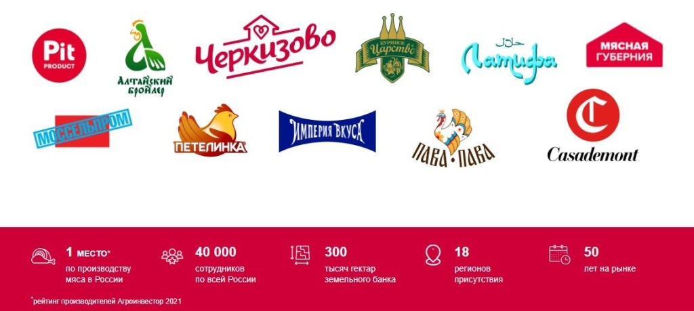
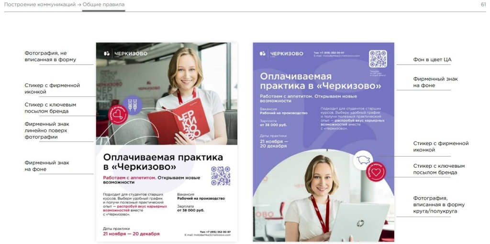
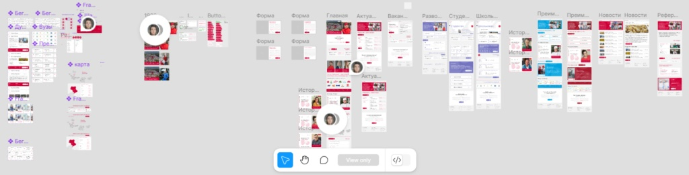
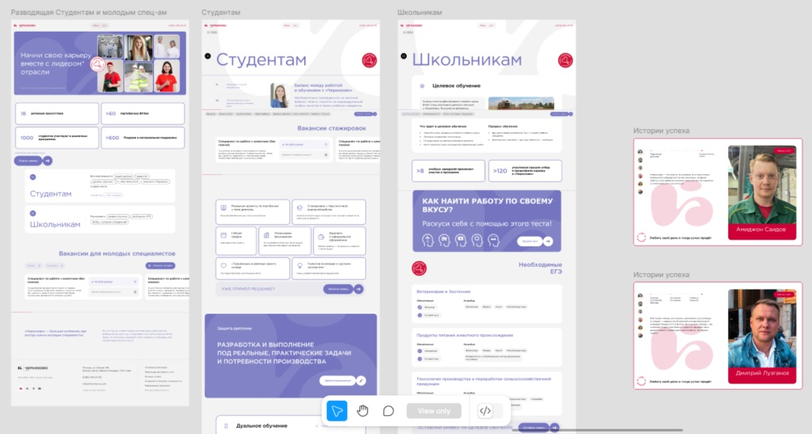
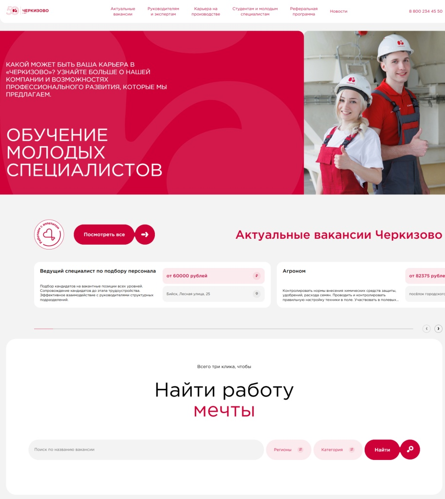
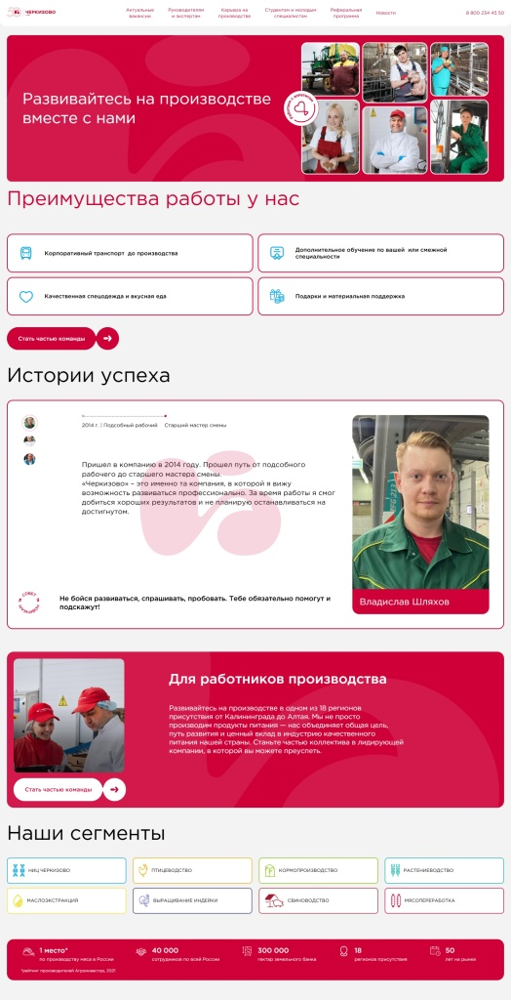
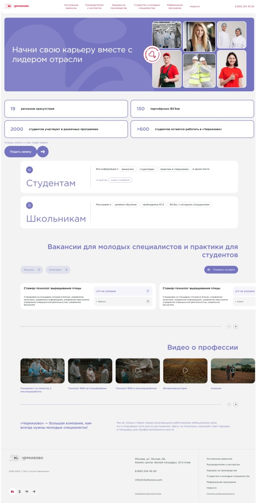
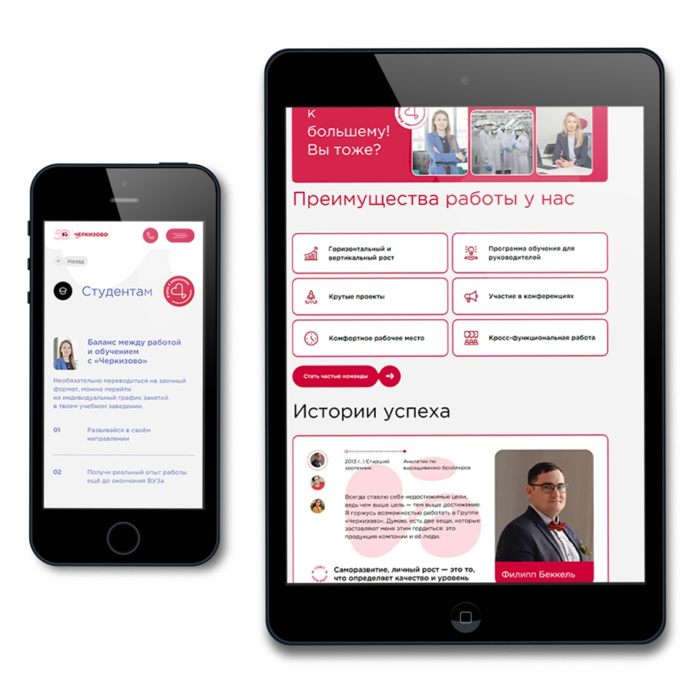
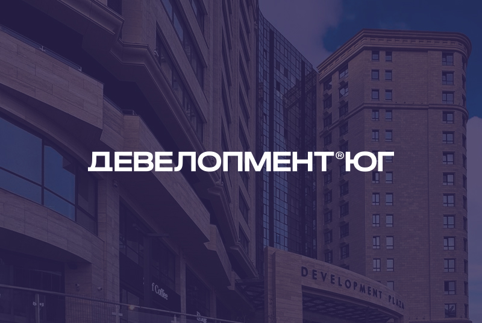

01
Мэтч профессии и призвания: карьерный портал для «Черкизово»
Разработать карьерный портал, который объединит вакансии, корпоративную культуру и преимущества работы в «Черкизово» для соискателей по всей стране.
НаправлениеРазработка
СфераАгропромышленность, производство продуктов питания
Дата22.11.2023
02
Клиент
Группа предприятий «Черкизово» — один из лидеров пищевой промышленности России (по данным рейтинга крупнейших компаний АПК России. РБК 2022).
В «Черкизово» работают более 40 000 сотрудников в 18 регионах страны. В 2024 году компания отметила юбилей — 50 лет производства продуктов питания, которые любят и ценят миллионы потребителей.

03
Задача
До этого проекта у «Черкизово» не было карьерного сайта. Вакансии публиковались на HH, стажировки — в презентациях, а ценности и культура компании существовали внутри организации. Нам требовалось собрать всё в одном месте и сделать не просто корпоративный сайт, а полноценную точку входа для будущих сотрудников.
Поставили цель: сайт должен вдохновлять и информировать одновременно, помогать найти подходящую вакансию, рассказать о масштабах компании и убедить, что в «Черкизово» есть место каждому — от стажера до руководителя.
04
Аналитика и дизайн
Проект делали с нуля: от аналитики и структуры до контента и CMS. Изучили, как устроены корпоративные сайты в других крупных компаниях. Собрали pain points у целевой аудитории, провели интервью с представителями различных отделов «Черкизово», чтобы понять их потребности и ожидания от нового ресурса. Проанализировали восьмидесяти страничный брендбук, чтобы сайт точно отражал тональность и визуальный стиль бренда работодателя — и стал логичным продолжением внутренней культуры компании в цифровой среде.

Один из ключевых фокусов в дизайне — удобство и ясность. Каждая секция построена так, чтобы пользователю было удобно «сканировать» страницу и быстро находить важное. Мы стремились к визуальной чистоте, понятной иерархии и легкой подаче даже насыщенного контента — всё, чтобы путь к новой работе начинался без лишних сложностей.


Структура, в которую легко нырнуть
В структуре сайта можно быстро найти нужную информацию. Главная страница задаёт тон и помогает сориентироваться: здесь и фильтр по вакансиям, и карта с городами присутствия, и ответы на вопросы, которые соискатели чаще всего задают hr-специалистам «Черкизово».

Добавили отдельные разделы с историей компании, ценностями, преимуществами и примерами карьерных маршрутов — но так, чтобы не перегрузить и не утомить.
Тексты на сайт писали так, как будто рассказываем другу о том, чем занимается компания «Черкизово», чем живут ее сотрудники, как развиваются и почему стоит работать именно здесь. Без воды, без канцелярита — с уважением к соискателю, который, возможно, совсем скоро станет частью команды.


Умная интеграция с HH
Кандидатам не нужно переключаться между вкладками в браузере — настроили интеграцию с HeadHunter: вакансии тянутся на сайт автоматически, отклик тоже идёт через HH. В настоящее время мы работаем над интеграцией с системой Skillaz для оптимизации процесса рекрутинга.
Технологии — в помощь HR
Сайт работает на стабильной и такой удобной Winter CMS. Контент можно редактировать из админки, фильтровать, добавлять новые вакансии. Оформили личный кабинет, оставили подробную инструкцию — HR-команда «Черкизово» может управлять сайтом самостоятельно, без разработчиков.
Сложности и решения
Одной из главных задач было соблюдение строгих требований службы безопасности компании. Мы реализовали необходимые меры, включая защиту административной панели и настройку доступа.
С учетом постоянно растущего сегмента мобильной аудитории сайт адаптирован для различных устройств, интерфейс интуитивно понятен, с четкой навигацией и небольшим количеством анимаций, чтобы обеспечить быструю загрузку страниц.

Координация на уровне чемпионата мира
Разрабатывать корпоративный портал для крупной группы компаний — это не только про масштаб, но и про умение организовывать процессы. Мы быстро научились модерировать конфколлы на 10-20 человек, согласовывать задачи с разными департаментами и вносить регулярные апдейты так, чтобы все участники процесса были в курсе деталей.
В «Черкизово» работает классная команда: каждый специалист на своем месте, с ясной позицией и готовностью обсуждать, конструктивно спорить и искать решения. Благодаря этому проект двигался четко, без хаоса, как слаженная сборная, где все играют на результат.
Результат
Современный, адаптивный, удобный сайт, который говорит с кандидатом на одном языке. Он помогает быстрее закрывать вакансии, растить HR-бренд и вовлекать тех, кто еще не определился с выбором.
У «Черкизово» — тысячи вакансий по всей стране, и у каждой — своя история. Здесь можно вырасти от стажера до начальника смены, запустить собственный проект в крупном департаменте или стать частью научной команды. Компания предлагает стабильность, понятную систему развития, обучение и реальную возможность строить карьеру. Не на словах — на деле. Люди приходят сюда за опытом, остаются за отношением. А сайт, который мы сделали, помогает им найти друг друга.
Интересный факт: по итогам 2023 года группа «Черкизово» заняла 28-е место в ежегодном рейтинге крупнейших работодателей России, — и лучшим работодателем в АПК — составляемом HeadHunter.
Если вам тоже нужен сайт, который решает задачи бизнеса (а не просто существует), вы знаете, к кому обращаться.
Кстати, мы не только сайты делаем, но и ведем соцсети, прокачиваем SEO и настраиваем рекламу. Вот тут весь список наших услуг — посмотрите, чем еще можем быть полезны.
От имени Группы «Черкизово» хотим поблагодарить коллектив Nuts Digital Agency за работу над созданием карьерного портала нашей компании.
Специалисты агентства продемонстрировали высокий уровень профессиональной подготовки и способность эффективно решать задачи в рамках установленных сроков.
Семенова СофияРуководитель направления бренда работодателя Группы «Черкизово»
PDFБлагодарственное письмо Черкизово2.1 Мб

Следующий кейс →